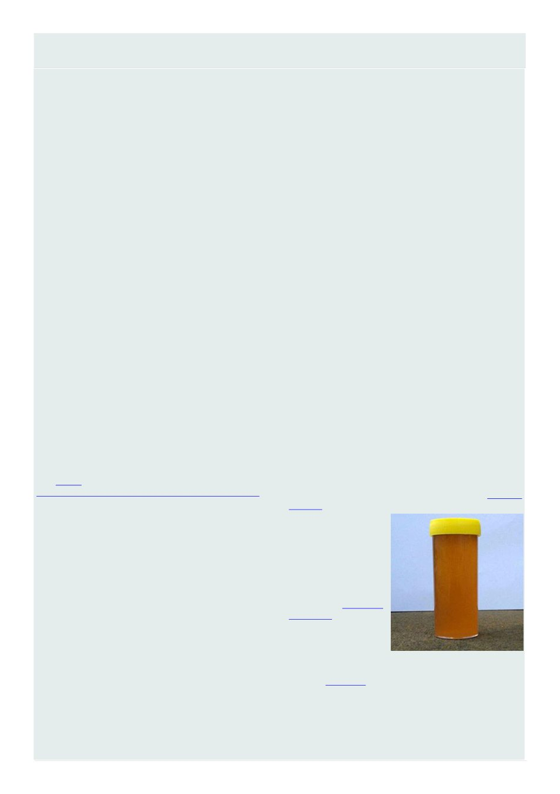

26
Australian Bee Journal
Varroa Mite Pyrethroid Resistance In Victoria
From Agriculture Victoria
Varroa mites resistant to pyrethroid chemicals have
been detected in an apiary located in north-east Victo-
ria. We are currently undertaking further analysis of
samples with results expected at the end of the month.
This detection follows reports of varroa mites re-
sistant to pyrethroid and formamidine [amitraz] chemi-
cals (commonly used chemicals to control varroa mites)
earlier this year in New South Wales and Queensland.
We wish to publicly acknowledge the leadership and
integrity of a beekeeper who reported suspected miti-
cide resistance in their apiary. The presence of pyre-
throid-resistant mites in the apiary is not a result of in-
dividual actions, rather a product of broader circum-
stances in preceding months. Proactive monitoring and
observation are hallmarks of good beekeeping and re-
porting something unusual is good for the entire indus-
try.
Recommended actions for beekeepers:
• monitor mite levels regularly for early varroa de-
tection and effective control. Treat only when thresh-
olds are reached.
• adopt Integrated Pest Management (IPM) using
cultural and mechanical controls, alongside chemical
controls.
• monitor mite levels before, during and after miti-
cide treatments and keep records of all treatments and
mite monitoring.
rotate varroa treatments with chemicals of different
modes of action. Follow chemical labels and permit
conditions.
If mite numbers continue to increase when using a
synthetic treatment please contact the Exotic Plant Pest
Hotline on
1800 084
881 or
submit a re-
port online through Agriculture Victoria website.
More information is available on the AHBIC website.
Early reporting rules out exotic bee mite threat
The early reporting of a suspect mite by a Victorian
beekeeper has reinforced the critical role beekeepers
play in protecting Australia‘s honey bee industry.
In early April, a beekeeper noticed an unusual mite
on a distressed honey bee that had entered their home,
and promptly reported the find through the Exotic Plant
Pest Hotline. [See ―Mystery Mites‖ in our May 2026
issue for an account of this same incident]
Clear photographs were also shared within the local
beekeeping community, allowing the report to be esca-
lated quickly.
The images were reviewed by Agriculture Victoria‘s
apiary team, who noted similarities with Tropilaelaps, a
serious exotic mite, not present in Australia and regard-
ed internationally as a major threat to honey bees.
―Anything that looks remotely like Tropilaelaps is
treated with urgency,‖ notes Dr Stephen Dibley, acting
Chief Plant Health Officer at Agriculture Victoria.
―Early reporting gives us the best possible chance to
assess the risk quickly and take action if needed.‖
Biosecurity officers contacted the beekeeper the
same day and attended the property to collect samples
and undertake tracing, including hive movements and
recent management practices. Samples of the mite,
bees from an alcohol wash, and bottom board material
were delivered to Agriculture Victoria‘s AgriBio labor-
atories for detailed examination.
Initial microscopic analysis indicated the mite did
not match Tropilaelaps, but further testing was under-
taken to rule it out conclusively.
―Our laboratories apply a rigorous, multistep diag-
nostic process,‖ Dr Dibley explains. ―Even when early
signs are reassuring, we don‘t stop there. We use spe-
cialist expertise and multiple methods to make sure
we‘re confident in the outcome.‖
While DNA testing was inconclusive for species
identification due to environmental contamination, ex-
pert morphological assessment and exclusion testing
confirmed the mite was not Tropilaelaps and posed no
exotic pest threat.
The beekeeper was informed of the result and
thanked for their vigilance.
―This is a really positive biosecurity story,‖ Dr Di-
bley reports. ―It shows how alert beekeepers, rapid re-
porting, and strong coordination between industry, field
staff and laboratories protect the entire sector.‖
Australia‘s freedom from many exotic bee pests de-
pends on constant surveillance and swift action when
something unusual is detected.
―Beekeepers are our eyes on the ground,‖ Dr Dibley
advises, ―if you see something that doesn‘t look right,
reporting it early protects your own hives and the
broader industry.‖
If you see unusual mites, larvae, unexplained symp-
toms or abnormal hive losses call the Exotic Plant Pest
Hotline on 1800 084 881 or submit a report through
your state biosecurity website.
Reminder: honey culture tests
Under the Australian Honey Bee Industry Code of
Practice and the Livestock Disease Control Act 1994,
beekeepers with 20 or
more hives are re-
quired to complete an
annual Honey Culture
Test on a pooled hon-
ey sample.
Honey
Culture
tests can provide early
detection of American
in
your
hives and assist in
early control and man-
agement.
The
2025-2026
Code Compliance reporting section is available
through BeeMAX for all beekeepers to complete and
record:
• date of last successful completion of Honey Bee
Pest and Disease training
• when hive inspections for pests and disease were
(Continued on page 27)